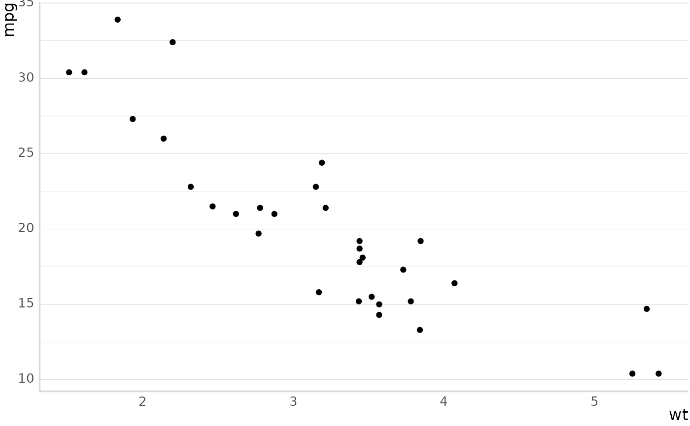

Extends ggplot2::theme_minimal() with markdown/HTML-aware text (via
ggtext::element_markdown()) on every text element, a bottom legend, and
the package's discrete color palette (mt_colors5) wired into the theme
itself. Also sets geom.* defaults (a translucent global "paper" aura,
plus fill defaults for geom_bar()/geom_area()/geom_col()/
geom_ribbon()/geom_density()) so plots look consistent without
repeating fill = ... on every layer.
Usage
theme_mt(
base_size = 10,
base_family = "Roboto Condensed",
plot_title_family = base_family,
subtitle_family = base_family,
strip_text_family = base_family,
axis_title_family = base_family,
axis_text_family = base_family,
caption_family = base_family,
plot_title_size = base_size + 2,
axis_text_size = base_size,
strip_text_size = base_size + 2,
subtitle_size = base_size + 2,
caption_size = base_size - 3,
axis_title_size = base_size + 2,
dark = FALSE,
grid_color = if (dark) .dark_grid else "gray85",
show_axis_line = TRUE,
axis_text_color = if (dark) .dark_axis_text else "gray30",
axis_line_color = if (dark) .dark_axis_line else grid_color
)Arguments
- base_size
Base font size, in points. Every other size argument derives from it by default.
use_theme_mt()passes the same default through, so a plot themed directly withtheme_mt()and one themed via the session default look the same - they used to disagree by nearly 2x (19 here, 10 there), with neither docstring mentioning the other.- base_family, plot_title_family, subtitle_family, strip_text_family, axis_title_family, axis_text_family, caption_family
Font families for each text element; all default to
base_family. See Details for the"Roboto Condensed"default's system requirement.- plot_title_size, axis_text_size, strip_text_size, subtitle_size, caption_size, axis_title_size
Font sizes for each text element, all derived from
base_sizeby default.- dark
Build a dark-mode-appropriate variant instead: transparent plot/panel background (rather than the translucent white "paper" used in light mode), light text/gridline/ink colors, and dark_mt_colors5 in place of mt_colors5 as the discrete palette and geom fill default. Meant for rendering the same plot a second time for a dark-themed page, alongside a
dark = FALSE(default) render for the light-themed page -theme_mt()'s output withdark = FALSEis unchanged by this argument existing at all.grid_color/axis_text_color/axis_line_colorstill default off ofdarkbut can be overridden individually either way.- grid_color
Color of the panel grid lines (and the axis line, when
show_axis_lineisTRUE). Defaults to a near-invisible light gray, or a near-invisible dark gray whendark = TRUE.- show_axis_line
Whether to draw the axis line at all (
TRUE) or make it transparent (FALSE).- axis_text_color
Color of the axis tick labels. Defaults to a dark gray, or a light gray when
dark = TRUE.- axis_line_color
Color of the axis line itself (only drawn when
show_axis_lineisTRUE). Defaults togrid_colorin light mode (as before); in dark mode it defaults to something brighter thangrid_color, since the axis line is a real boundary (drawn thicker than the grid) and reads as too faint at the grid's own brightness.
Details
Call use_theme_mt() to make this the session's active theme -
library(emptyviz) does not do this automatically.
dark = TRUE is tuned for a page background of about #151515. It sets
paper = NA and a transparent plot.background, deliberately - the
figure then sits directly on whatever the host page uses, which is what
makes a Quarto light/dark toggle work without re-rendering. The
consequence is that the real background is the host's, not this
theme's, and every contrast decision in dark mode is made against
#151515: the grid line at 1.19:1, the axis line at 3.14:1, the ink at
14.4:1. Nothing validates the assumption, and a host theme at, say,
#2b2b2b or #1e1e2e shifts all three - far enough that the
near-invisible grid could invert against a light-ish "dark" background.
If your site's dark background differs much from #151515, either match
it or pass grid_color/axis_text_color/axis_line_color explicitly.
The discrete palette separates categories by hue, with very little
lightness difference between them: every pair in mt_colors5 falls below
the 3:1 WCAG 1.4.11 contrast threshold for distinguishable graphical
objects, and eight of the ten pairs below 2:1 (teal #066b8a and purple
#9109d5 sit at 1.09:1 - effectively the same shade of gray). Each color
has adequate contrast against a white background, so text and outlines
are fine; the limitation is strictly category-vs-category. Under
grayscale printing, a monochrome projector, or reduced color
discrimination, categories can merge. Beyond about three categories, give
the plot a redundant non-color channel - shape, linetype, or direct
labels - rather than relying on hue alone. plot_location_scale() does
this by default (see its category_shape/category_linetype), and
plot_bf_forest()'s positive_shape/negative_shape are the same idea.
base_family (and every other *_family argument, which default to it)
defaults to "Roboto Condensed", a font this package does not install or
register - it must already be present on the system (and discoverable by
the graphics device in use) for text to render as intended. If it isn't
installed, most graphics devices silently substitute a fallback font
rather than erroring, so a plot can look subtly different across machines
with no warning. Install it (e.g. via a system font manager, or
sysfonts::font_add_google("Roboto Condensed") + showtext::showtext_auto()
for device-independent rendering), or pass a base_family you know is
available, if reproducing a plot's exact appearance matters.
Examples
library(ggplot2)
# a system-available family sidesteps the "Roboto Condensed" requirement
# described in Details, so this renders identically everywhere
ggplot(mtcars, aes(wt, mpg)) +
geom_point() +
theme_mt(base_family = "")
